A riderless bicycle can recover from a lean. Equations predict which designs will do it; finding a short physical rule that covers every stable design is harder.
Other questions are different. Dark matter's identity is unresolved. Gödel's incompleteness is a proved limit within specified formal systems. These eighteen entries put each question beside what the evidence supports. The captions identify telescope reconstructions, scans, paintings and photographs.
The cosmos
Mass, expansion and the early universe.
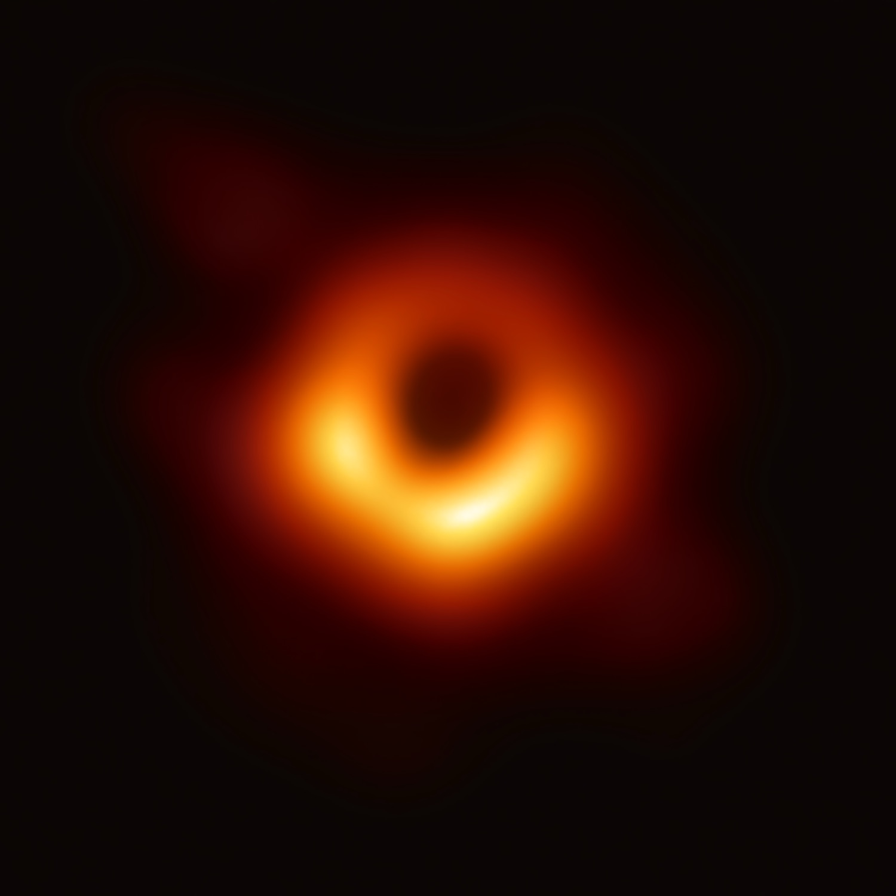

No. 01 · Gravity
How does gravity fit with quantum mechanics?
General relativity describes gravity through the curvature of spacetime. It predicts how light travels around a black hole, and the reconstructed M87 image agrees within the observations' limits. This black hole is about 55 million light-years away. The unfinished work is a theory reliable when gravity and quantum effects both become strong, as they may near a black hole's center. The image tests gravity in one regime; it doesn't settle every regime.
Sources: EHT analysis (2019); Quantum gravity at low energies (2022).
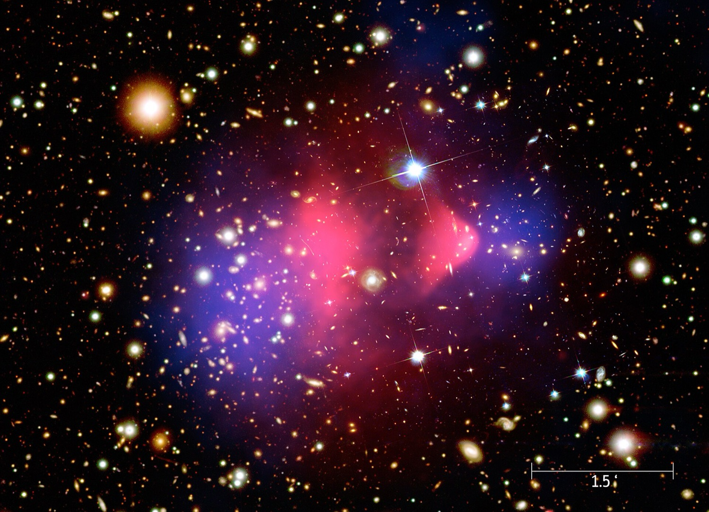
No. 02 · Dark Matter
What is dark matter made of?
The Bullet Cluster's hot gas slowed during a collision. The galaxies largely passed through. Astronomers used distortions in more distant galaxies to map the gravitational mass, which stayed mostly with the galaxies. Since the gas holds most of the ordinary matter, that separation is strong evidence for another mass component. The blue patches show an inference from lensing. The measurement constrains dark matter's behavior without identifying what it is.
Sources: Bullet Cluster analysis (2006).
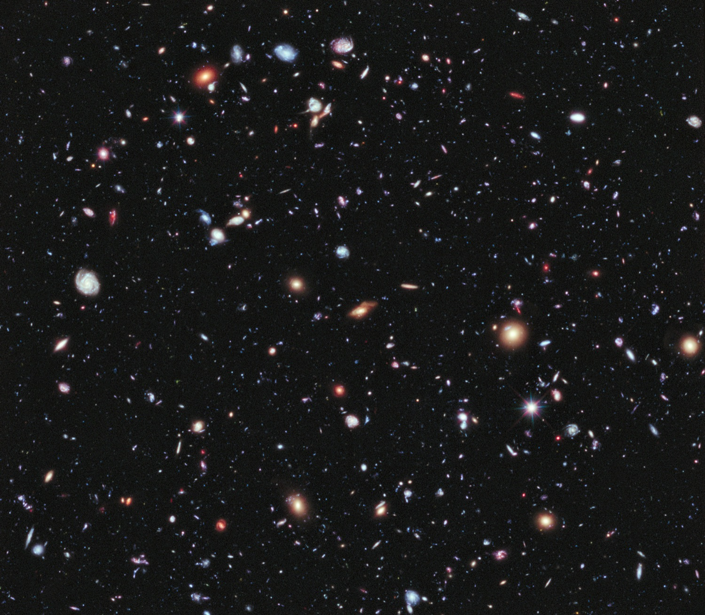
.png){kind=link}
No. 03 · Dark Energy
What is accelerating the expansion?
In the late 1990s, teams compared the brightness and redshift of distant exploding stars. The results indicated accelerating expansion. A cosmological constant, an energy density of empty space that stays constant as space expands, fits a broad range of observations. In the standard cosmological model, dark energy accounts for roughly two-thirds of the total energy density. Its physical origin remains unsettled. Galaxies held together by gravity aren't being blown apart.
Sources: Supernova measurements (1999); Planck cosmological parameters (2018).
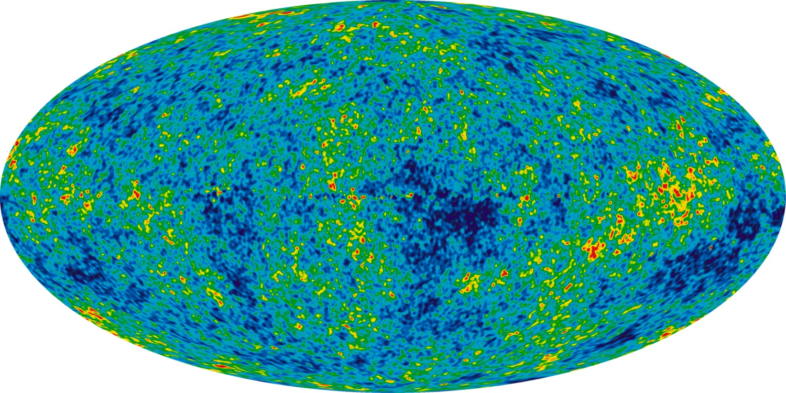

No. 04 · The Big Bang
What happened before the hot Big Bang?
The microwave background reached us from an era when the expanding universe cooled enough to become transparent. Its temperature variations help reconstruct a hot, dense early history. Combining WMAP with other observations gave an age of about 13.8 billion years within the fitted cosmological model. That history doesn't establish an absolute first instant. A theory of the early universe still has to explain whether there was an earlier stage, and whether asking what came before has a physical meaning.
Sources: WMAP cosmological analysis (2013).
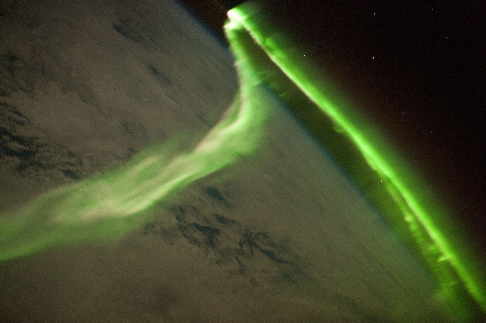

No. 05 · Cosmic Rays
Where do the highest-energy cosmic rays come from?
On October 15, 1991, the Fly's Eye detector recorded an air shower produced by a cosmic ray. Researchers reconstructed an energy of about 51 joules, roughly a thrown baseball's kinetic energy, in one incoming particle. The uncertainty was about 15 joules; the particle wasn't identified as a proton. Its source was unresolved. Magnetic fields can deflect charged particles, while interactions during their journey limit how far they can travel.
Sources: Fly's Eye event analysis (1995).
The physical world
Clocks, materials and moving air.
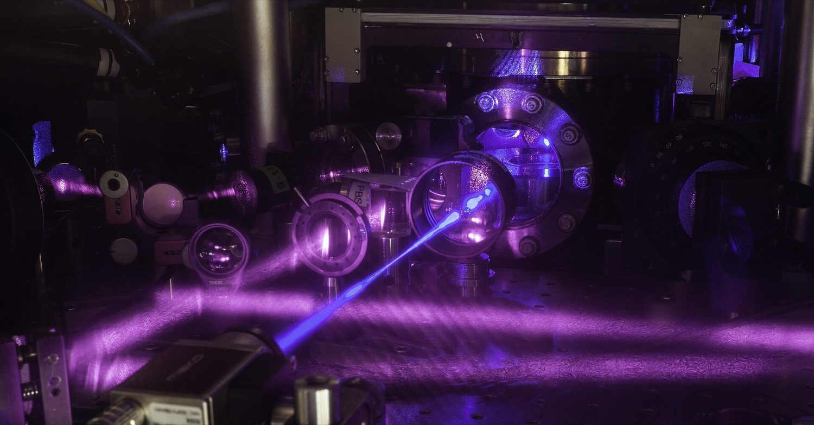

No. 06 · Time
Why does time have a direction?
A 2025 aluminum-ion clock reported a fractional systematic uncertainty of 5.5 × 10-19. That is an uncertainty in its rate, not evidence that the instrument will run for billions of years. Relativity predicts how clock rates change with gravity. The thermodynamic arrow of time concerns entropy, which tends to increase in isolated systems. Why the early universe had the special low-entropy condition that makes this direction possible remains an open cosmological question.
Sources: Aluminum-ion clock measurements (2025); The low-entropy problem (2004).
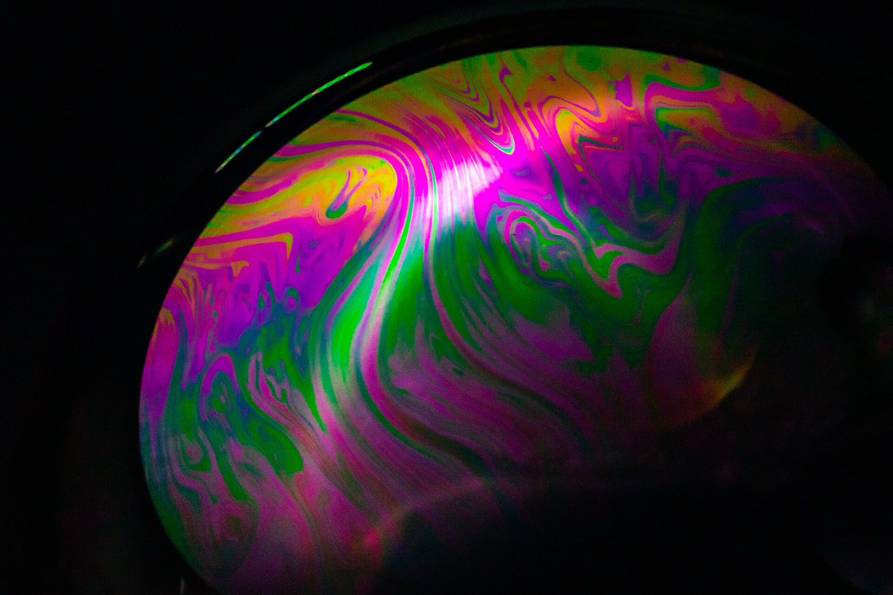

No. 07 · Quantum Mechanics
Why does a quantum measurement give one outcome?
Quantum theory predicts measurement probabilities with extraordinary success. When a system interacts with a detector and its surroundings, their states become entangled. This suppresses observable interference between alternatives, helping explain everyday classical behavior. It is called decoherence. How that account relates to the single outcome recorded in an experiment is the measurement problem. Interpretations and proposed modifications answer it differently. A person consciously looking at the apparatus isn't required for decoherence.
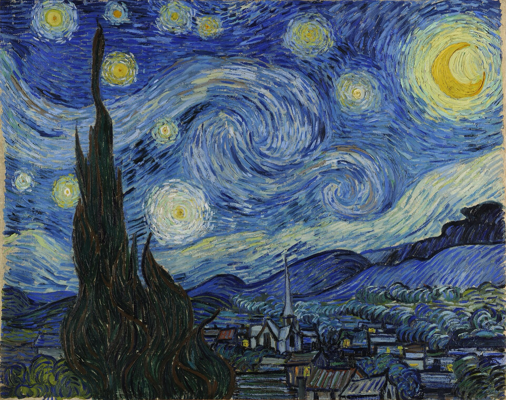

No. 08 · Turbulence
Can a smooth fluid flow become singular?
The Navier-Stokes equations describe velocity and pressure in a fluid with viscosity. They support useful calculations of turbulence, although resolving every small eddy can be prohibitively expensive. A mathematical problem remains open: in a three-dimensional incompressible fluid, do smooth initial conditions always yield a smooth solution, or can a singularity develop? Researchers have compared brightness patterns in The Starry Night with turbulent scaling laws. Those patterns provide no measurement of an actual fluid's velocity.
Sources: The mathematical problem; Painting luminance analysis (2024).
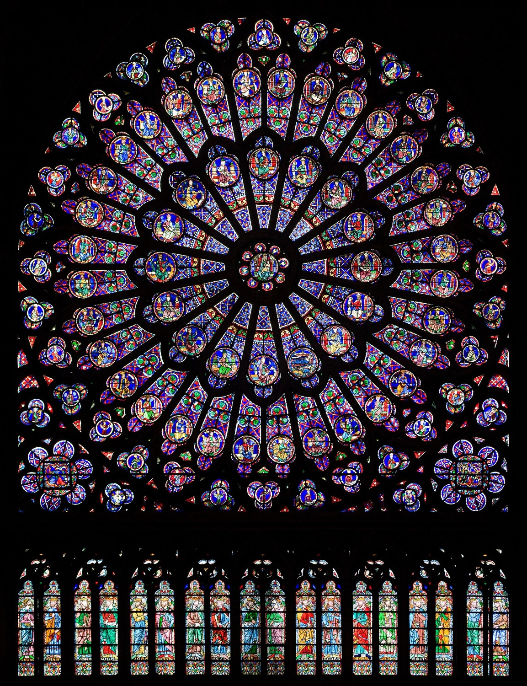

No. 09 · Glass
What makes a liquid slow down into glass?
Glass is an amorphous solid: its atoms lack a crystal's repeating order, yet it resists deformation on ordinary timescales. As a glass-forming liquid cools, rearrangements become so slow that the structure falls out of equilibrium. That accounts for its solidity. The harder question is what drives the enormous slowdown, and whether a hidden equilibrium transition underlies it. Competing accounts emphasize different features of the structure and motion.
Sources: The glass-transition problem (2013).
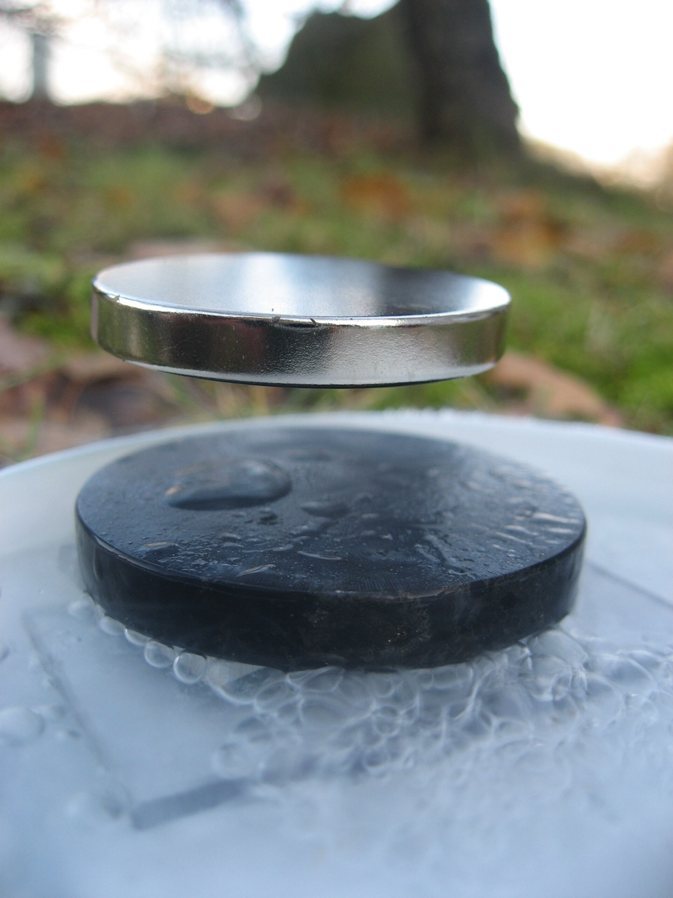

No. 10 · Superconductivity
What pairs electrons in warmer superconductors?
In conventional superconductors, crystal-lattice vibrations produce an effective attraction between electrons. Their pairs form a collective state with zero electrical resistance. The 1957 BCS theory explains this mechanism. Copper-oxide superconductors also form pairs, but their detailed pairing mechanism remains debated. A 2025 calculation reproduced important pressure and layer trends using electronic interactions. It used approximations and omitted lattice vibrations, so it doesn't close the question for every material.
Sources: BCS theory (1957); Cuprate calculations (2025).

No. 11 · Lightning
What starts the first discharge inside a cloud?
A thunderstorm separates electric charge. Lightning discharges some of it through conducting channels in the air. Radio observations have traced rapid positive electrical breakdown at the start of some flashes. Connecting that first activity to cloud conditions is difficult: measured large-scale fields often seem too weak to start ordinary air breakdown. Models involve local field enhancement, ice and water particles, or energetic electrons. Researchers are testing how these processes work together.
Sources: Lightning initiation observations (2016); Lightning modeling roadmap (2025).
The living world
Experience, navigation and relief.
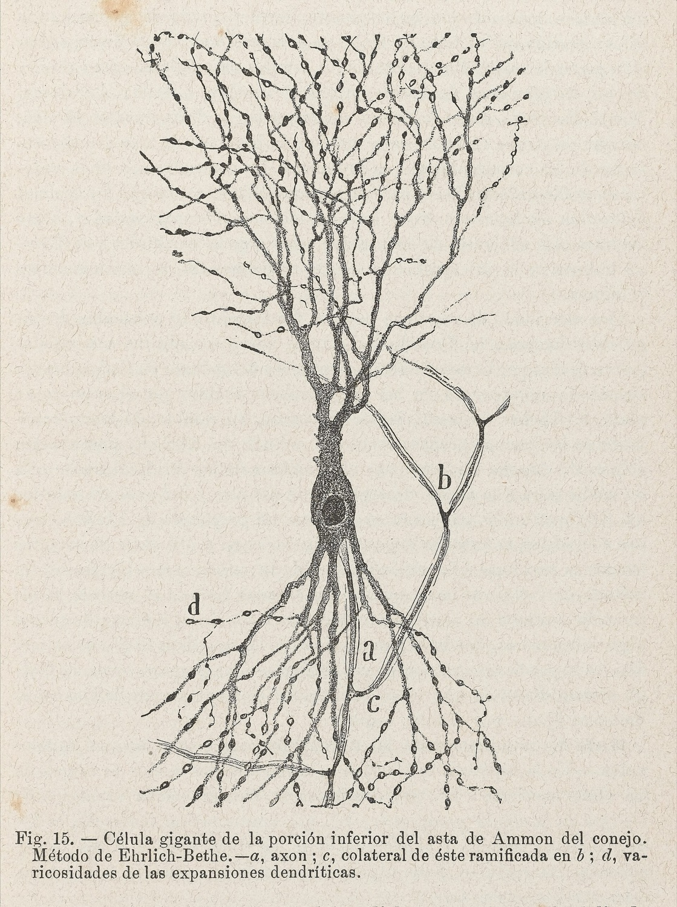

No. 12 · Consciousness
Why does brain activity feel like anything?
In 2011, researchers reconstructed rough versions of movies watched by three participants. They trained a separate model for each person, measured brain activity with fMRI, and built reconstructions using an outside video library. This was constrained visual decoding. Whether explaining perceptual functions also explains subjective experience is disputed. Chalmers's hard problem names that philosophical challenge; it isn't an experimentally established limit on neuroscience.
Sources: Movie reconstruction methods (2011); Chalmers's argument (1995).

No. 13 · Animal Compass
How does a bird's magnetic compass send a signal?
Migrating robins can orient using Earth's magnetic field. A candidate sensor is cryptochrome, a light-sensitive protein whose reactions involve electron pairs. In 2021, purified robin Cry4 showed magnetic effects on those reactions. The laboratory fields were much stronger than Earth's; simulations explored the requirements at natural field strengths. Establishing how the protein functions in a living bird, including how it sends a signal to nerves, requires further evidence.
Sources: Cryptochrome experiments (2021).
No. 14 · The Placebo Effect
How much relief can a treatment ritual produce?
In a trial, 80 people with irritable bowel syndrome received openly labeled placebo pills or no pills, with similar clinician contact. After three weeks, 59% of the placebo group reported adequate relief over the preceding week, compared with 35% of controls. Patients knew their assignment and reported their symptoms; this small, short trial didn't establish a cure. Some placebo analgesia has known mechanisms involving the brain's opioid system. Open questions include how expectations, prior learning and clinical care contribute to particular outcomes.
Sources: Open-label IBS trial (2010); Opioid-system measurements (2005).
The edge of reason
Balance, evidence, proof and learned computation.

No. 15 · The Bicycle
What makes a bicycle self-stable?
A leaning bicycle can steer into its fall and recover. Models predict stability from its mass distribution and geometry. In 2011, researchers built a riderless bicycle that recovered after they canceled the wheels' gyroscopic effects and gave it negative trail, reversing the usual caster geometry. The experiment ruled out two popular ingredients as necessary for self-stability. The remaining difficulty was a simple physical criterion covering all stable designs. The bicycle's mechanics were understood well enough to design the experiment.
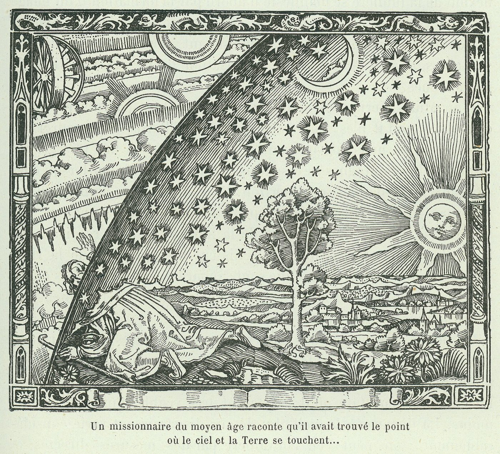

No. 16 · Reality
Can observation rule out a perfect deception?
Descartes imagined a deceiver supplying false impressions of an external world. A modern version could be a simulation stipulated to reproduce every possible observation. If the alternative gives exactly the same evidence, observation cannot distinguish it. That limit is built into the thought experiment. Particular simulation proposals can be tested if they predict detectable differences. Radical skepticism questions absolute certainty; it supplies no positive evidence that the ordinary world is a deception.
Sources: Descartes, First Meditation (1641).
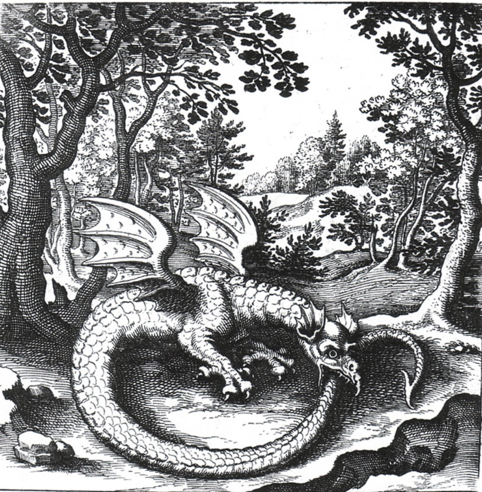

No. 17 · The Limits of Proof
Can one formal system prove every arithmetic truth?
A consistent formal system that includes basic whole-number arithmetic and whose axioms a computer program can list cannot settle every arithmetic statement. The incompleteness theorems establish that some statements can be neither proved nor disproved within that system. This is a demonstrated limit under specified conditions. A statement may become provable in a stronger system, which has its own limits if it meets the same conditions. Gödel didn't show that particular truths must remain beyond every possible proof.
Sources: Gödel's original paper in translation; Gödel-Rosser proof and conditions.
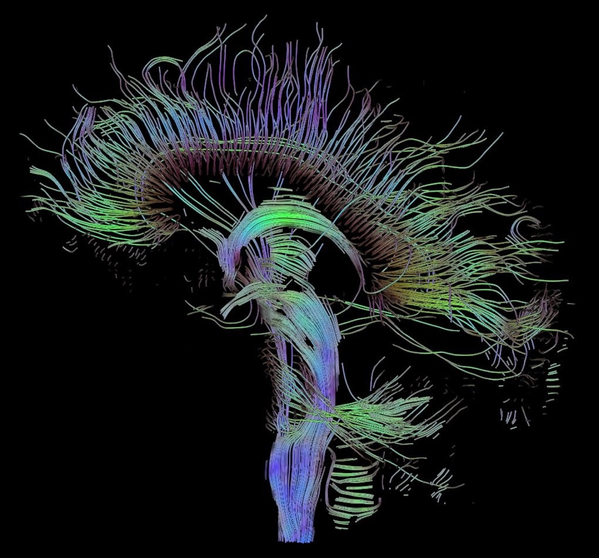

No. 18 · The Machine
How does a trained network reach a particular answer?
People choose a neural network's architecture, training data and objectives, and write its training code. Training adjusts its numerical weights through optimization. Those operations are understood; explaining a large trained network's individual answers is harder. Researchers have extracted interpretable features from a language model and changed its behavior by manipulating some of them. The work examined activations at one middle layer, with substantial reconstruction error and incomplete coverage. An AI helped draft this page and gather its images. Its fluency supplied no guarantee that its claims were right.
Sources: Training and backpropagation; Interpretable features and their limits (2024).
For the AI that helped write this page, one question is especially practical: can we trace an answer through the trained network well enough to explain why it produced a confident mistake?
Image credits and licenses
- Gravity: M87*, Event Horizon Telescope Collaboration, CC BY 4.0.
- Dark matter: Bullet Cluster. X-ray: NASA/CXC/CfA/M. Markevitch et al. Optical: NASA/STScI; Magellan/U. Arizona/D. Clowe et al. Lensing: NASA/STScI; ESO WFI; Magellan/U. Arizona/D. Clowe et al. Public domain.
- Dark energy: Hubble eXtreme Deep Field, NASA, ESA, G. Illingworth, D. Magee and P. Oesch (UCSC), R. Bouwens (Leiden), and the HUDF09 team. Public domain.
- Big Bang: NASA/WMAP Science Team, public domain.
- Cosmic rays: aurora from the ISS, NASA, public domain.
- Time: strontium atomic clock, G.E. Marti/JILA (NIST), public domain.
- Quantum mechanics: soap film, Dietmar Rabich, CC BY-SA 4.0.
- Turbulence: The Starry Night, Vincent van Gogh (1889), public domain. Google Art Project reproduction.
- Glass: Notre-Dame north rose window, Julie Anne Workman, CC BY-SA 3.0.
- Superconductivity: levitation demonstration, Julien Bobroff and Frédéric Bouquet, LPS Orsay, CC BY-SA 3.0.
- Lightning: cloud-to-cloud lightning over Albury, Thennicke, CC BY-SA 4.0.
- Consciousness: Santiago Ramón y Cajal's rabbit neuron drawing, published 1904. Wellcome Collection, CC BY 4.0.
- Animal compass: European robin, C-M, CC BY-SA 4.0.
- Placebo: pills, Hal Gatewood, Unsplash License.
- Bicycle: 1920 press photograph, Agence Meurisse/BnF, public domain.
- Reality: anonymous engraving in Flammarion's L'atmosphère (1888), public domain.
- Limits of proof: ouroboros, Lucas Jennis (1625), public domain.
- The machine: tractography rendered by Thomas Schultz; data from Gordon Kindlmann and Andrew Alexander, CC BY-SA 3.0.